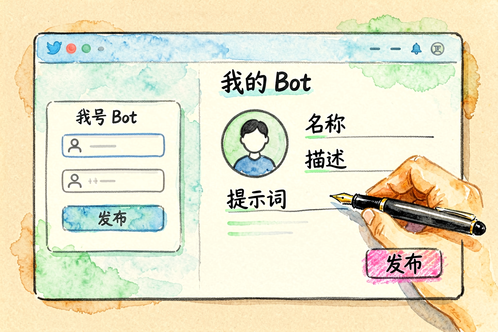
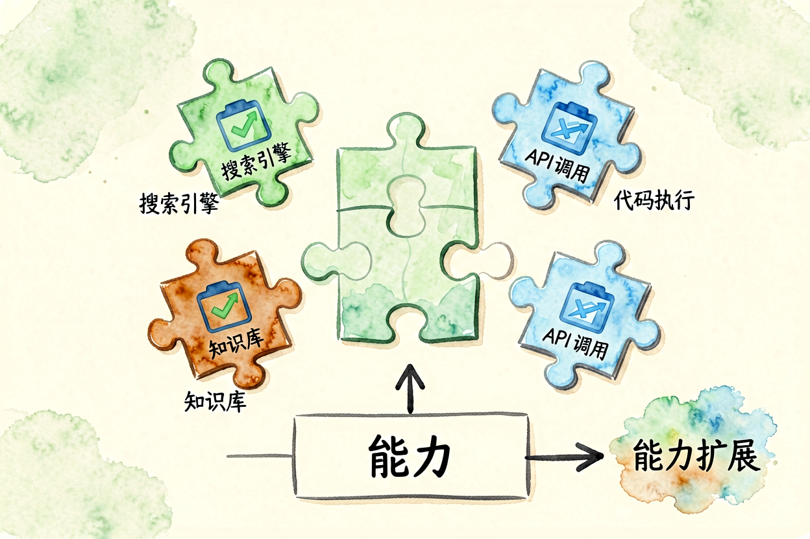
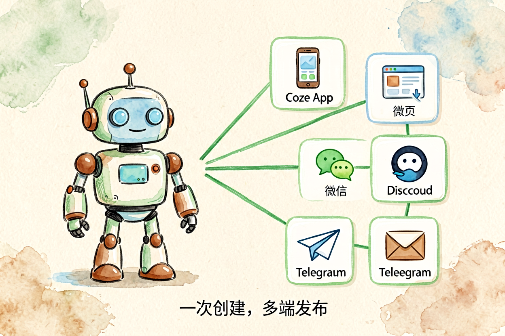
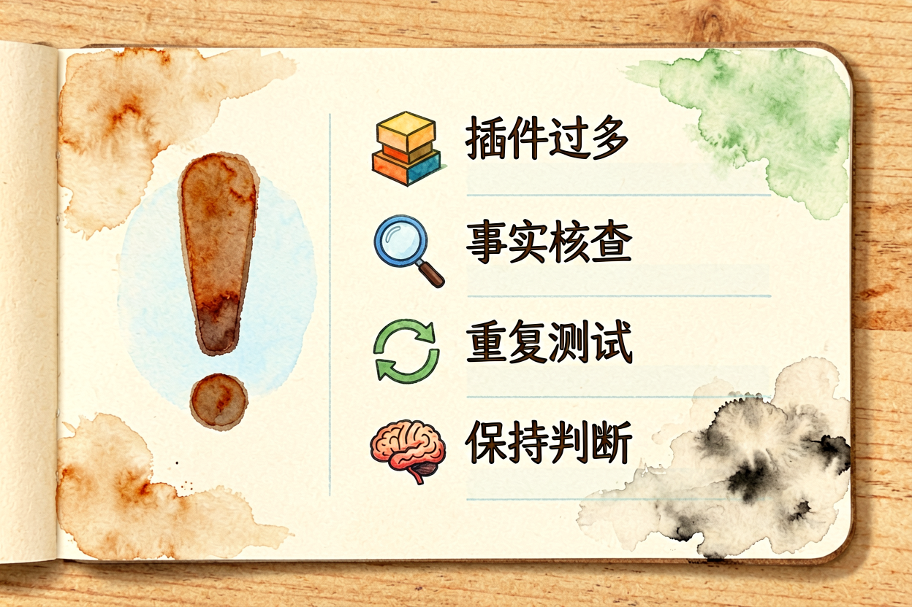

Coze 新手教程：零代码搭建 AI 智能体
Coze 是字节跳动的 AI 智能体平台，零代码搭建个人助理、客服机器人、知识问答。本文从零讲清怎么用，新手一小时上手。
Coze新手教程是本文的核心主题。 !配图1Coze界面概览
{kind=link}
Coze新手入门：零代码 AI 智能体平台
Coze 是字节跳动的 AI 智能体平台，零代码搭建个人助理、客服机器人、知识问答等智能体。支持自定义提示词、插件、知识库、工作流，发布到微信、Telegram、Discord 等平台。
和Coze 与 Dify 对比里讲的差异不同，本文专注 Coze 本身的使用技巧。Coze 的优势是零代码、国内直连、免费版够用，短板是高级功能需付费、插件生态不如海外。
Coze新手入门：注册与界面熟悉

打开 coze.com，用手机号或微信登录。免费版每月 1000 积分，足够测试基础功能。界面分三块：左侧智能体列表、中间配置区、右侧预览区。
新手建议先创建一个测试智能体，熟悉基本操作。Coze 支持自定义提示词、插件、知识库、工作流，新手建议先熟悉纯提示词配置，再逐步解锁高级功能。
Coze新手入门：创建第一个智能体

点击「创建智能体」，填写名称、描述、头像。然后配置提示词，这是智能体的核心。示例：
你是一个专业的健身教练。
你的任务是帮用户制定健身计划。
你会根据用户的身体数据、目标、时间安排，给出个性化建议。
你的语气要友好、专业、鼓励性。提示词要具体，描述清楚角色、任务、语气、边界。参考AI 提示词怎么写里的 C.L.E.A.R. 框架。
Coze新手入门：添加插件与知识库

插件是 Coze 的扩展功能，支持联网搜索、计算器、代码执行等。新手建议先添加「联网搜索」插件，让智能体能回答实时问题。
知识库是智能体的专属资料库，上传 PDF、Word、TXT 后，智能体能基于这些资料回答。适合做企业知识库、产品 FAQ、学习助手等场景。
Coze新手入门：测试与发布

配置完成后，用右侧预览区测试智能体。问几个问题，检查回答是否准确、语气是否合适、边界是否清晰。
测试满意后点击「发布」，选择发布平台：微信、Telegram、Discord、网页等。微信发布需要审核，通常需要 1-3 天。
发布后分享给朋友或团队，收集反馈，持续优化。智能体不是一成不变的，根据用户反馈不断调整提示词、插件、知识库。
关于 Coze 新手教程，核心经验是「先跑通，再优化」。别一上来就追求完美，先创建一个简单智能体跑通全流程，再逐步添加高级功能。
Coze 新手教程的关键是动手试。别看完就忘，当天就创建一个智能体，让操作成为习惯。用多了自然熟练。掌握 Coze 新手入门的技巧，创建效率会翻倍。
本文信息核对于 2026-09-07。AI 产品的价格、免费额度与功能变动频繁，实际以各工具官网当前说明为准。